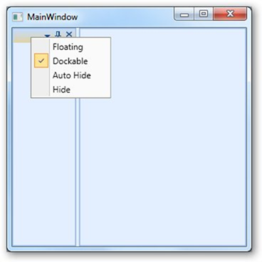

We can remove individual MenuItem in ContextMenu using the following properties. The removal can be done by right clicking on it.
· ShowHiddenMenuItem
· ShowFloatingMenuItem
· ShowFloatingMenuItem
· ShowDockableMenuItem
· ShowTabbedMenuItem
· ShowTabbedMenuItem
· ShowAutoHiddenMenuItem
· ShowDocumentMenuItem
· ShowCloseMenuItem
· ShowHorizontalTabGroupMenuItem
· ShowVerticalTabGroupMenuItem
· ShowMovetoNextTabGroupMenuItem
· ShowMovetoPreviousTabGroupMenuItem
· ShowRestoreMenuItem
· ShowMoveMenuItem
· ShowResizeMenuItem
· ShowMinimizeMenuItem
· ShowMaximizedMenuItem
The below code shows how to disable Tabbed menu item using ShowTabbedMenuItem attached property
|
[XAML] <syncfusion:DockingManager> <Grid Name="grid1" syncfusion:DockingManager.ShowTabbedMenuItem="False"/> </syncfusion:DockingManager> |
|
[C#] DockingManager.SetShowTabbedMenuItem(grid1, false); |

Figure 388 : ShowDockableMenuItem
Similarly you can use other properties to disable corresponding MeniItems.